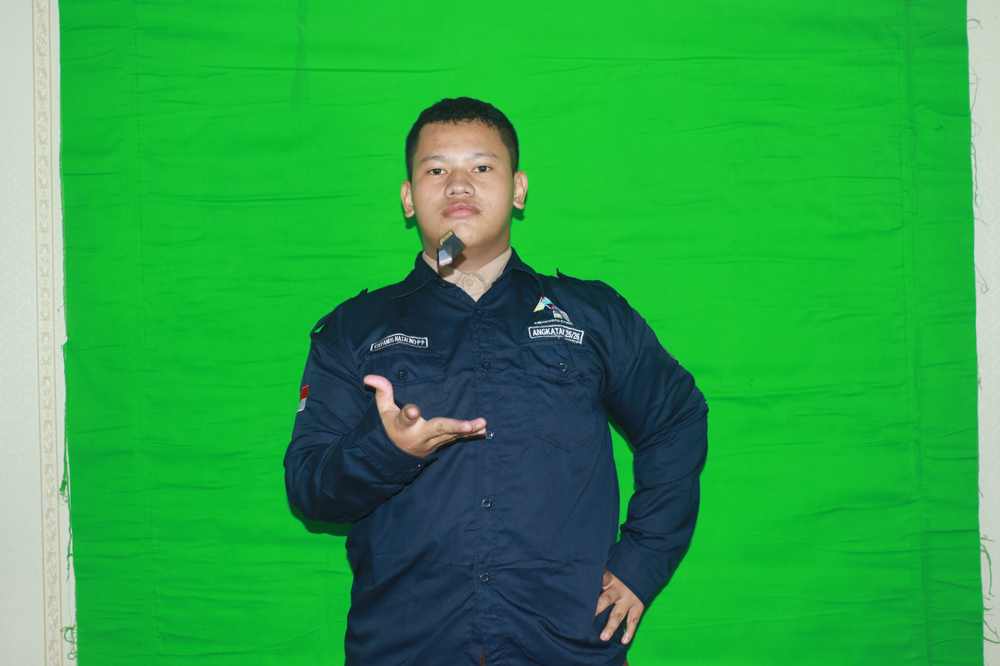
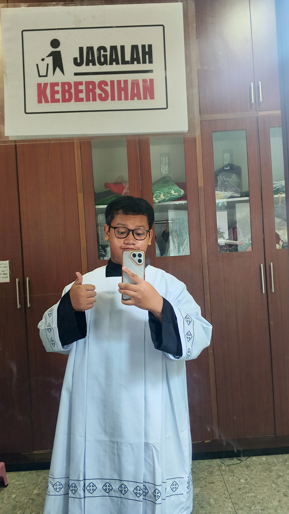

SP🌐 Web Application
siperu-purbowardayan
Sistem Informasi Peminjaman Ruang Paroki SPMR Purbowardayan — mempermudah reservasi & manajemen jadwal ruang secara digital.
Web & Desktop Developer — Siswa SMK jurusan PPLG yang berpengalaman membangun aplikasi modern dengan ☕ Java dan ⚡ JavaScript. Fokus pada kode yang bersih, cepat, dan siap produksi.

SMK PPLG • Web & Desktop Developer
Halo! Saya Natalino Stefanus, siswa SMK jurusan PPLG (Pengembangan Perangkat Lunak dan Gim) yang jatuh cinta sama dunia ngoding sejak pertama kali bikin program berjalan dengan baik. Bagi saya, coding bukan cuma soal baris kode — tapi tentang memecahkan masalah dan bikin sesuatu yang bermanfaat buat orang lain. Di sekolah saya belajar disiplin, kerja tim, dan cara berpikir logis yang rapi.
Ketertarikan utama saya ada di dua bidang: pengembangan aplikasi desktop berbasis Java — yang solid, terstruktur, dan cocok untuk sistem yang kompleks — serta pengembangan web modern dengan JavaScript & HTML yang interaktif dan cepat. Kombinasi keduanya bikin saya bisa membangun aplikasi dari tampilan yang enak dilihat sampai logika di balik layar yang handal. Ke depan, saya ingin terus mengasah skill dan berkontribusi di proyek nyata.

Teknologi yang saya gunakan sehari-hari — dari logika backend sampai antarmuka yang interaktif.
Bahasa utama untuk aplikasi desktop yang solid & terstruktur.
Bikin web jadi hidup — interaktif, cepat, dan responsif.
Fondasi web yang rapi, semantik, dan SEO-friendly.
Styling modern — dari layout grid sampai animasi halus.
Membangun website modern yang cepat dan enak dipakai.
Aplikasi desktop yang stabil untuk sistem kompleks.
Kode rapi, riwayat jelas, kolaborasi lancar.
Senjata harian — ngoding nyaman, debugging cepat.
Empat proyek utama dari GitHub — dari sistem informasi paroki sampai aplikasi desktop Java.
Sistem Informasi Peminjaman Ruang Paroki SPMR Purbowardayan — mempermudah reservasi & manajemen jadwal ruang secara digital.
Aplikasi interaktif berbasis Java untuk manajemen dan edukasi — antarmuka desktop yang intuitif dan terstruktur.
Aplikasi manajemen data siswa dengan integrasi REST API dan local caching — CRUD cepat dengan sinkronisasi database.
Proyek pengembangan web interaktif berbasis HTML — eksplorasi layout kreatif dan interaksi front-end yang halus.
Punya ide proyek atau ingin diskusi soal Java & web development? Kirim pesan — saya akan balas secepatnya!
natalino.stefanus@email.com
Respon tercepat via email — biasanya < 24 jam.
Ikuti karya & update terbaru saya: